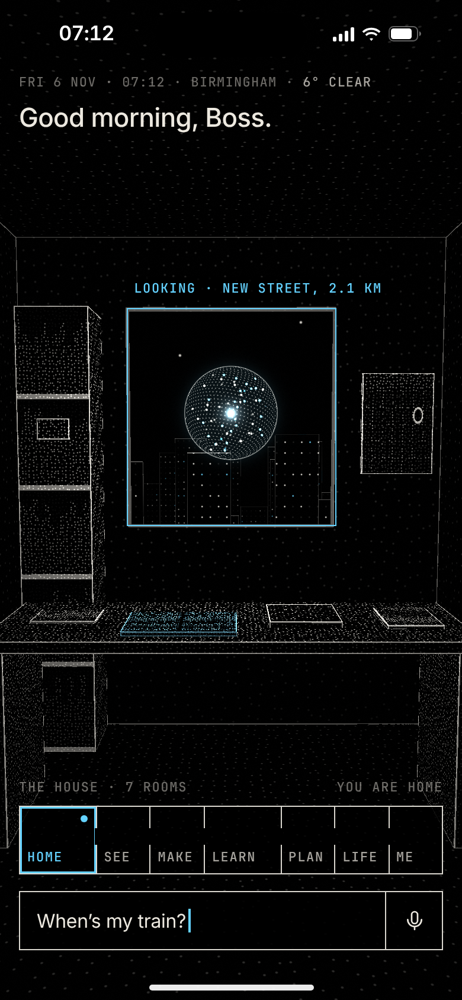
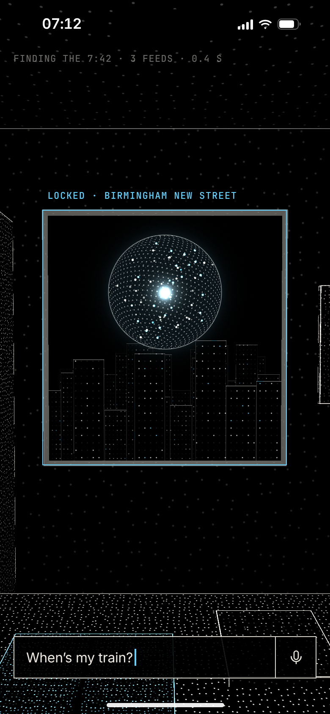
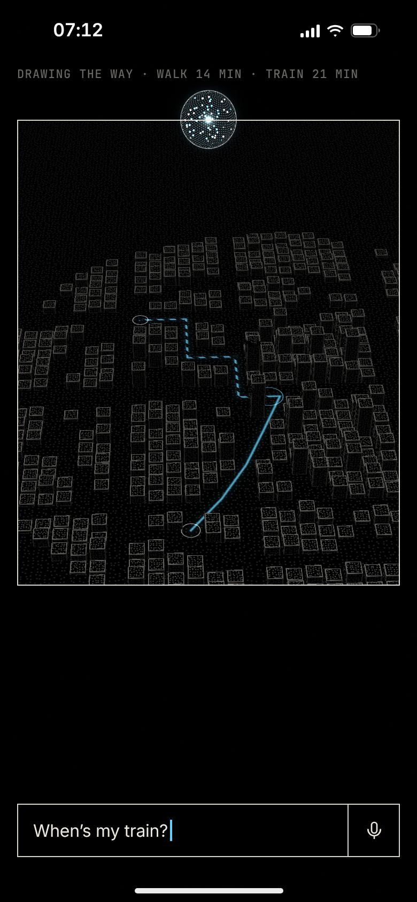
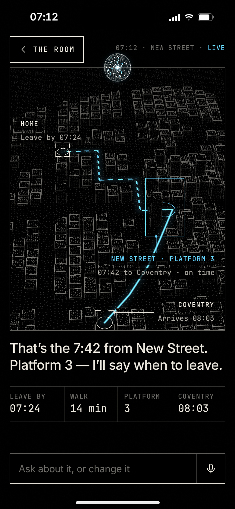

The phone is a window into a 3-D scan of a room where everything Ghosty does has its place. Asked for his train, the eye turns to the window and the city outside is brought to the front.

1 · He asks07:12. He types “When’s my train?”. The other tags let go; the eye turns to the window, where the answer is.

2 · The eye locksOne reticle locks on the window: Birmingham New Street. The camera starts across the room towards it.

3 · Through the windowThe room falls away behind; the city outside resolves from points into a model and the way draws itself.

4 · The StageThe window is at the front. The 7:42, platform 3, the walk and the train; the sentence comes after the picture.